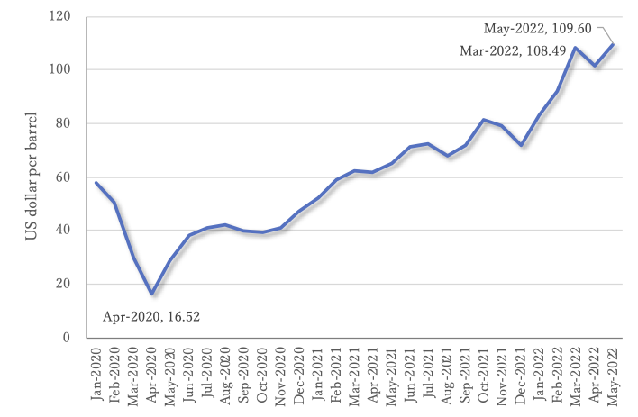
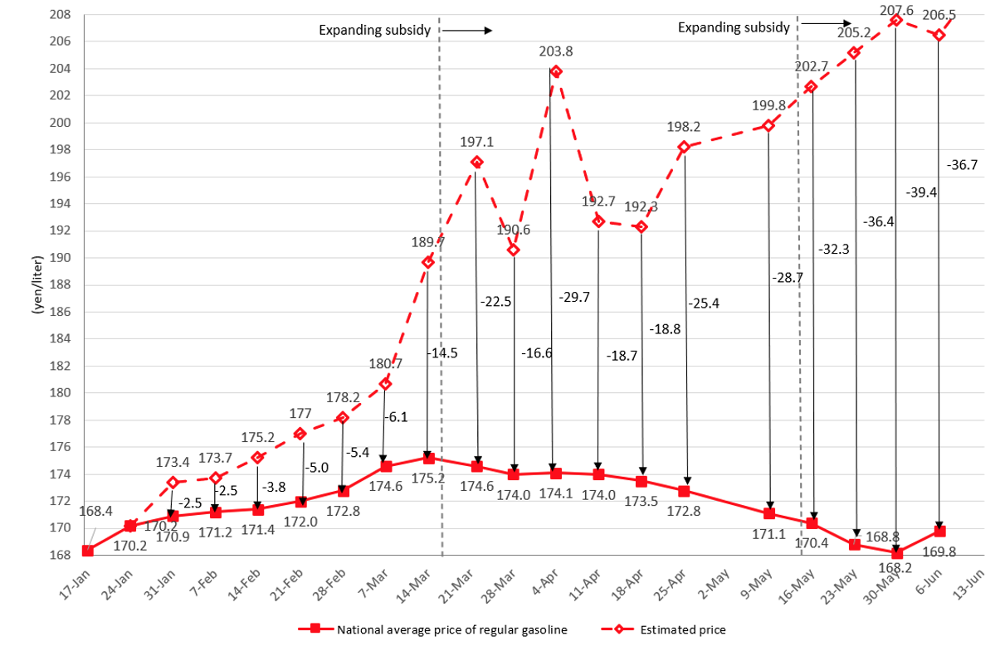
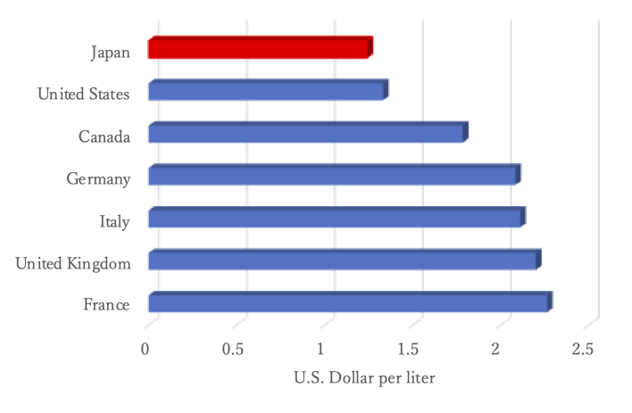

Japan’s Gasoline Subsidy Policies Contrary to Decarbonization
06/17 2022
Author: Satoshi Honma
Fig. 1 depicts the trend in crude oil prices (West Texas Intermediate) from January 2020 to present. Because of the sharp drop in global demand for crude oil due to COVID19, oil prices decrease; the monthly price fell to $16.52 per barrel in April 2020. However, crude oil prices have been rising since May 2020 due to the effects of vaccination.
The world is facing rising energy and resource prices as a result of Russia’s invasion of Ukraine in February of this year. In particular, crude oil reached a recent high of $108.49 per barrel in March 2022 and reached a new high in May with a monthly price of $109.60 per barrel.

To combat the rise in oil prices, the Japanese government implemented a subsidy program for gasoline and other petroleum products in January 2022.

Note 2: The method for calculating the forecast price after March 14 is based on the following formula, by increasing the subsidy: (Weekly price survey result) + (Amount paid the previous week) + (Amount of crude oil price fluctuation).
When the national average price of gasoline exceeds 170 yen per liter, the program provides fuel oil wholesalers with up to 5 yen per liter in subsidies. The subsidy cap was then raised twice, from 5 to 25 yen per liter and then from 25 to 35 yen per liter.
Fig. 2 depicts the Japanese Ministry of Economy, Trade, and Industry's position on policy effects (English translation by the author). Without the subsidy, the price of gasoline would have reached 206.5 yen per liter, but the subsidy has kept the price down to 169.8 yen per liter.
However, was this subsidy necessary? In the long run, the more important policy issue should have been to promote the energy transition from fossil fuels to renewable energy to achieve the Paris Agreement’s goals.
Higher gasoline prices, in the absence of subsidies, could have partially replaced people’s modes of transportation from cars to bicycles and public transportation like trains and buses. It may have pushed consumers to seek out hybrid and plug-in hybrid cars and electric vehicles to replace gasoline vehicles.
As illustrated in Fig. 3, Japan’s gasoline prices were the lowest among major industrialized countries.

Government funds should be spent on preventing temperature increases over the next 100 years rather than on immediate price control measures.
The Ukraine crisis has slowed global decarbonization efforts, forcing a temporary return to coal-fired power. Meanwhile, as an additional sanction in response to the invasion of Ukraine, the European Union agreed to a ban on Russian oil imports at the end of May. Although energy supply and price trends will remain volatile, governments must not relax their commitment to achieving a decarbonized society.